资源
- GAMES104-现代游戏引擎：从入门到实践_哔哩哔哩_bilibili
- GAMES104 - 现代游戏引擎入门必修课 (boomingtech.com)
- Piccolo 社区 - 游戏引擎爱好者的新家园 (piccoloengine.com)
- BoomingTech/Piccolo: Piccolo (formerly Pilot) – mini game engine for games104 (github.com)
- GAMES104：现代游戏引擎，从理论到实践 - 知乎 (zhihu.com)
课程
第八节：游戏引擎的动画技术基础
Animation System
Basics of Animation Technology
Humans have been trying to represent object in motion
人类一直在尝试表现运动中的物体
{kind=link}
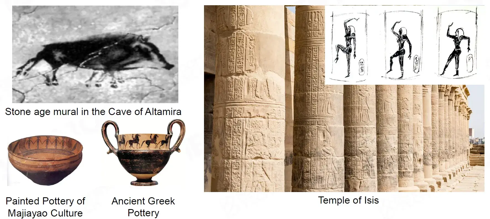
{kind=link}
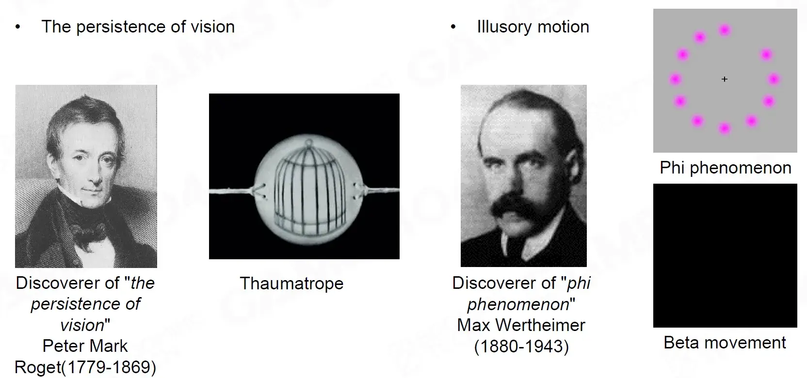
-
The persistence of vision
视觉暂留
-
lllusory motion
虚幻的运动
{kind=link}
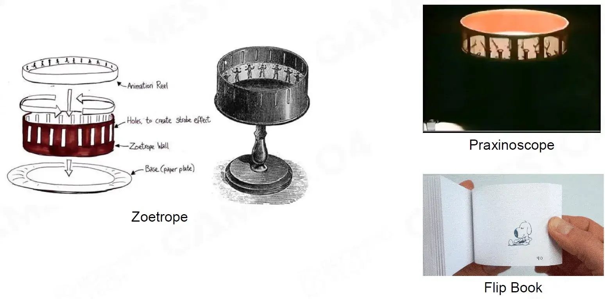
Animation Techniques in Film
动画产业最早从电影兴起。
{kind=link}
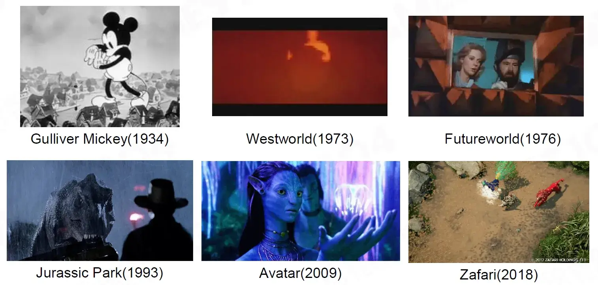
{kind=link}
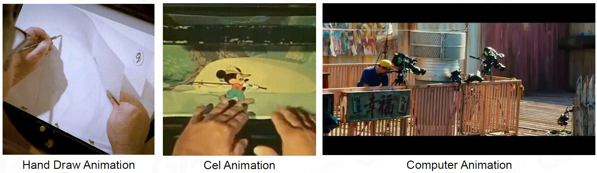
-
Hand Draw Animation
手绘动画
-
Cel Animation
赛璐珞动画
Cel animation 是一种传统的动画制作技术，也被称为传统动画。它是通过在透明的塑料或树脂片上手绘动画角色和背景，然后将它们叠加在一起，逐帧拍摄来制作动画。这种技术在过去几十年一直被广泛应用，直到计算机动画技术的出现。
-
Computer Animation
计算机动画
Animation Techniques in Game
{kind=link}
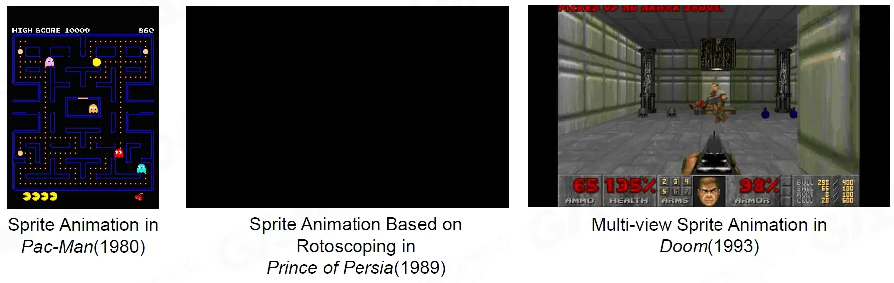
最早的游戏动画来自 2D。Doom 是一个用 2D 技术做的 3D 效果的游戏。
{kind=link}
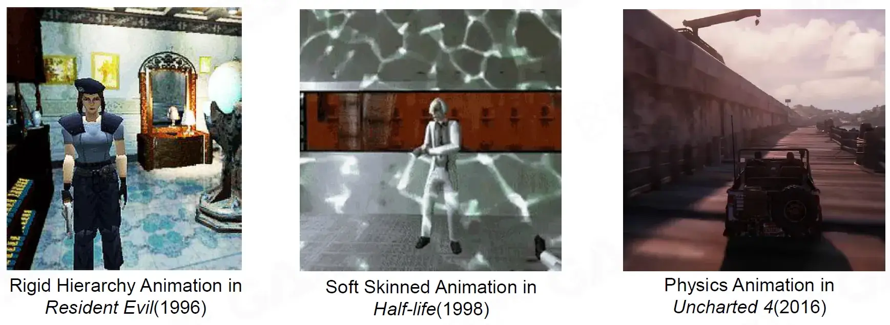
-
Rigid Hierachy Animation
刚性层阶式动画，容易穿模
-
Soft Skinned Animation
蒙皮动画
-
Physics Animation
物理动画
Challenges in Game Animation (1/3)
{kind=link}
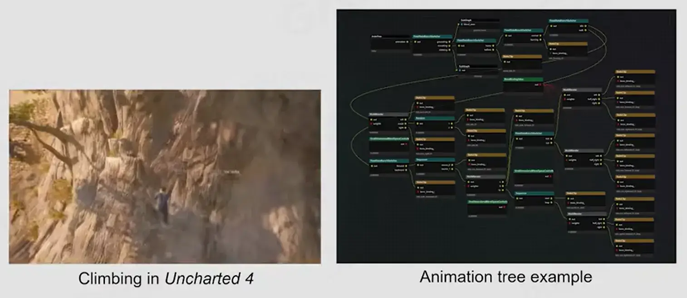
Interactive and dynamic animation
互动和动态动画
-
Vary according to the interaction
根据互动而变化
-
Cooperate with other gameplay systems
与其他游戏系统配合
-
Make adjustments in complex environments
在复杂环境下进行调整
Challenges in Game Animation (2/3)
{kind=link}
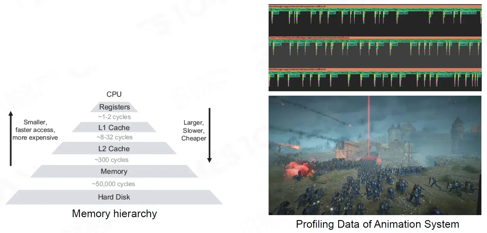
Real-time
-
Compute per frame
逐帧计算（在一帧内完成所有计算）
-
Massive animation data (Disk and memory)
海量动画数据（磁盘和内存）
Challenges in Game Animation (3/3)
Realism
现实主义
-
More vivid expression
更生动的表达
-
More authentic experience
更真实的体验
{kind=link}
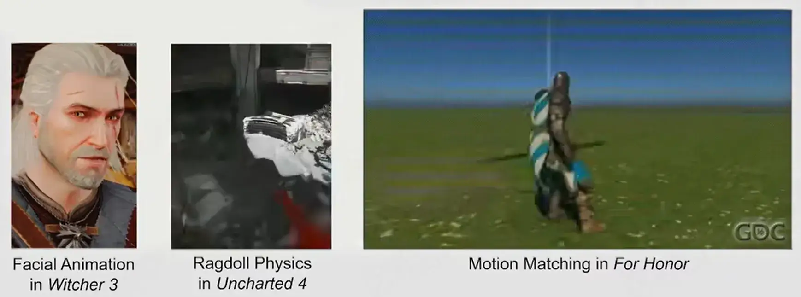
-
Facial Animation
面部动画
-
Ragdoll Physics
布娃娃物理
-
Motion Matching
运动匹配
Outline of Animation System
-
Basics of Animation Technology
动画技术基础
2D Animation
2D 动画
3D Animation
3D 动画
Skinned Animation lmplementation
蒙皮动画实现
Animation Compression
动画压缩
Animation DCC
动画 DCC 是指动画数字内容创建（Digital Content Creation）工具，通常是指用于制作电影、电视、游戏和其他数字媒体内容的软件套件。这些工具能够帮助动画师和艺术家制作、编辑和渲染动画和视觉效果，从而实现各种复杂和精细的动画效果。
-
Advanced Animation Technology
先进的动画技术
Animation Blend
动画混合
Inverse Kinematics
逆运动学
Animation Pipeline
动画管线
Animation Graph
动画图
Facial Animation
面部动画
Retargeting
重定向
2D Animation lechnigues in Games
2D Animation-Sprite animation
{kind=link}
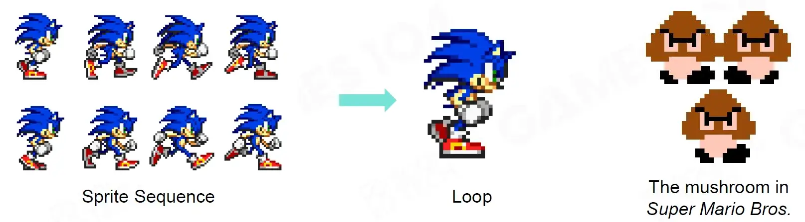
The electronic equivalent to cel animation
相当于赛璐珞动画的电子版
-
A sprite is a small bitmap that can be overlaid on top of a background image without disrupting it
精灵是一个小位图，可以覆盖在背景图像之上而不破坏它
-
The sequence of frames was designed so that it animates smoothlyeven when it is repeated indefinitely
帧序列经过精心设计，即使无限重复，动画也能流畅进行
The Sprite-like animation technique in pseudo-3D game
伪 3D 游戏中的类精灵动画技术
{kind=link}
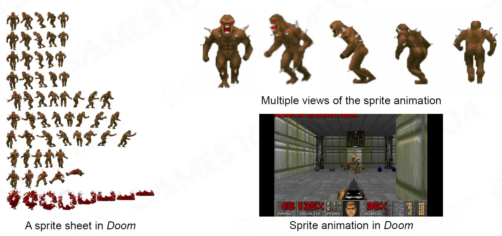
用 2D 画出 3D 中各个视角的图片。
Sprite Animation in Modern Game
{kind=link}
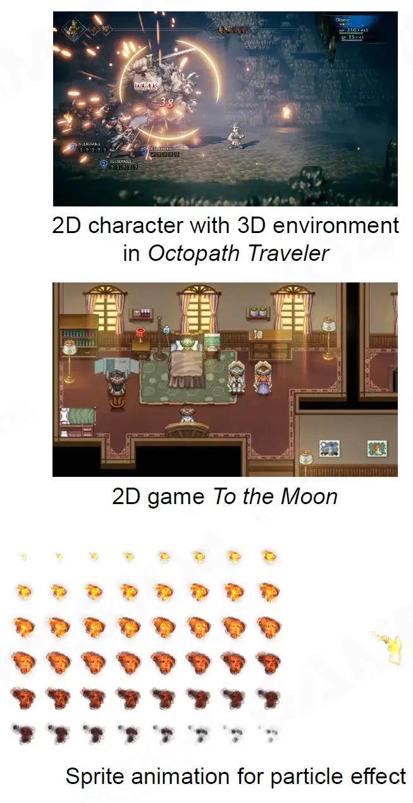
Application
应用
-
2D character
2D 角色
-
Sprite on 2D background image
2D 背景图像上的精灵
-
Sprite on top of 3D rendered environment
3D 渲染环境之上的精灵
-
-
Game effect
游戏效果
-
Sprite sheet texture for particles
粒子的精灵片纹理
-
Live2D
{kind=link}
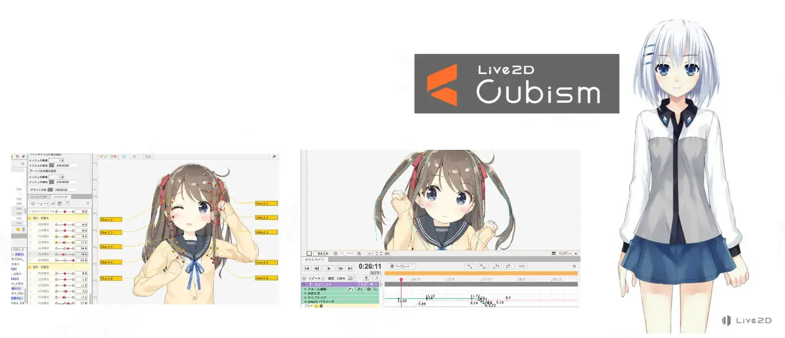
A technology to generate 2D animation without 3D model
一种无需 3D 模型即可生成 2D 动画的技术
-
Usually refer to eponymous software series epmloying the technology created by Live2D Ltd.
通常指采用 Live2D Ltd. 创建的技术的同名软件系列。
-
Could develop dynamic character, especially anime-style character without a 3D model
无需 3D 模型即可开发动态角色，尤其是动漫风格的角色
{kind=link}
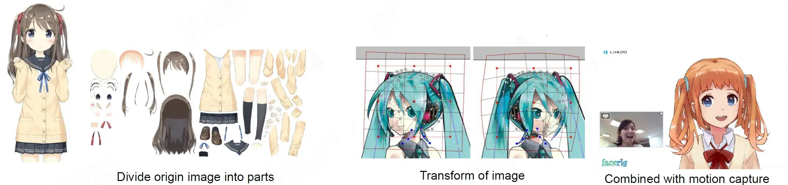
-
By applying translation, rotation and transformation to different parts and layers of image.
通过对图像的不同部分和图层应用平移、旋转和变换。
-
Combined with real-time motion capture, could be used for vtubing
结合实时动作捕捉，可用于 vtubing
{kind=link}
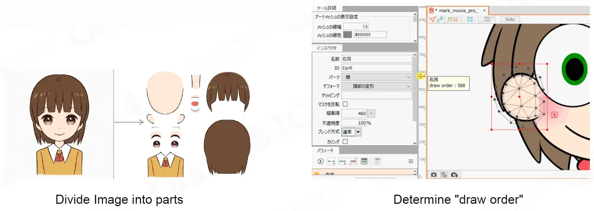
Make a Live2D animation
制作 Live2D 动画
Prepare resources
准备资源
-
Dividing origin character image into different parts
将原始角色图像分为不同的部分
-
Set "draw order" to each parts for further use
为每个零件设置“绘制顺序”以供进一步使用
{kind=link}
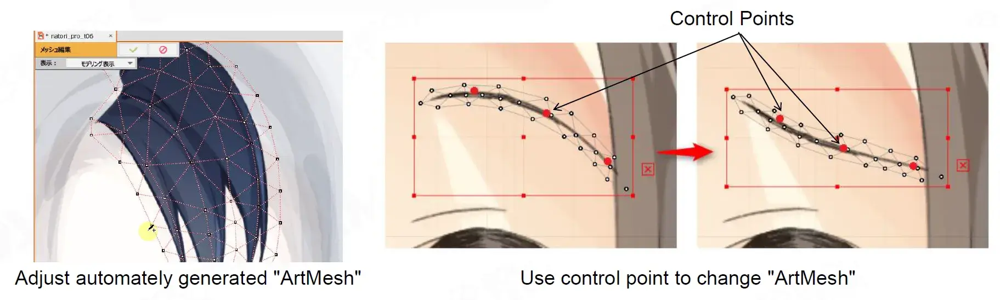
Make a Live2D animation
制作 Live2D 动画
Transform image by using control points for parts
使用零件的控制点变换图像
-
"ArtMesh" could be automately generated for each parts, which defined by vertices, edges and polygons
可以为每个部分自动生成“ArtMesh”，由顶点、边和多边形定义
-
Control points could be used to help transforming "ArtMesh'
控制点可用于帮助改造“ArtMesh”
{kind=link}
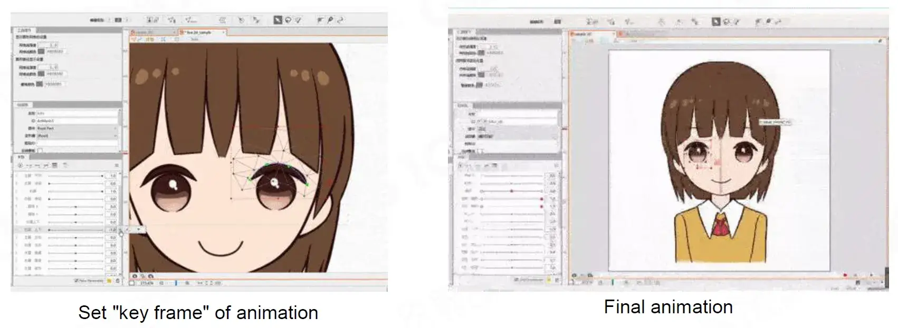
Make a Live2D animation
制作 Live2D 动画
Set animation "key frame"
设置动画“关键帧”
-
Set "key frame" to help animation interpolation
设置“关键帧”以帮助动画插值
3D Animation lechnigues in Games
DoF (Degrees of Freedom)
{kind=link}
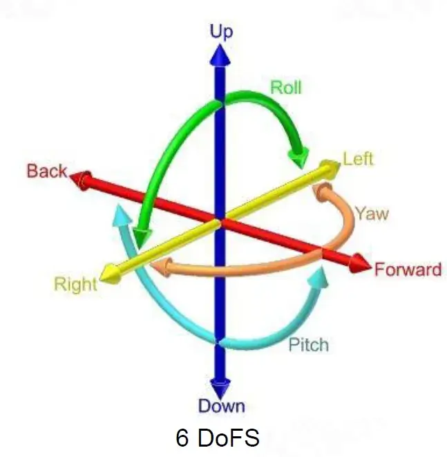
-
refers to the number of independent variables or parameters of a system
指系统的自变量或参数的数量
DoF For rigid objects
DoF 对于刚性物体
{kind=link}
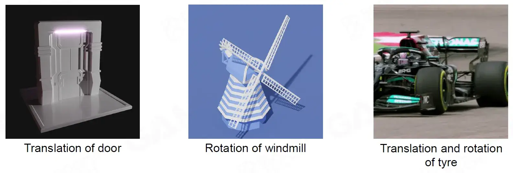
-
6 DoFs per object or sub-part
每个对象或子部分有 6 个自由度
Rigid Hierarchical Animation
刚性层阶式动画
{kind=link}
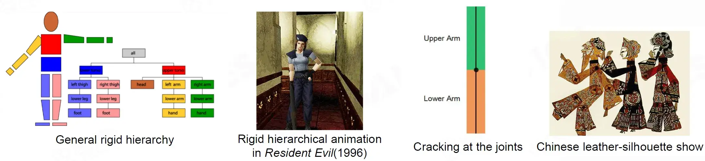
-
The earliest approach to 3D character animation
最早的 3D 角色动画方法
-
A character is modeled as a collection of rigid pieces
角色被建模为刚性部件的集合
-
The rigid pieces are constrained to one another in a hierarchical fashion
刚性部件以分层方式相互约束
Per-vertex Animation
顶点动画
{kind=link}
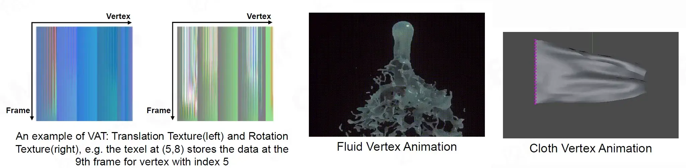
与蒙皮动画相比，顶点动画更适合模拟流体或是布匹。
-
Most flexible (3 DoFs per vertex)
最灵活（每个顶点 3 个自由度）
-
Mostly implemented by Vertex Animation Texture (VAT)
主要由顶点动画纹理（VAT）实现
-
Suitable for complex morphing
适用于复杂的变形
-
Need massive data
需要海量数据
Morph Target Animation
{kind=link}
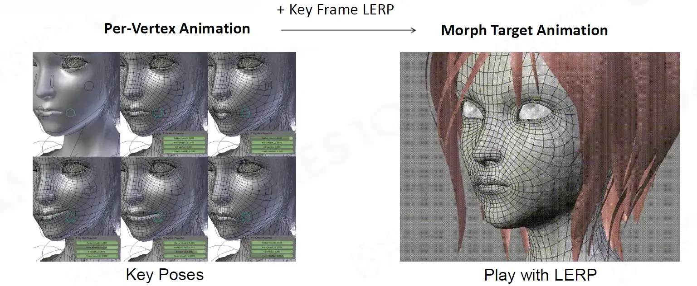
-
A variation on Per-vertex Animation
每个顶点动画的变体
-
Use key frames with LERP instead of sequence frames(e.g. 30 frames per second
使用带有 LERP 的关键帧而不是序列帧（例如每秒 30 帧）
-
-
Suitable for facial expression
适合面部表情
3D Skinned Animation
{kind=link}
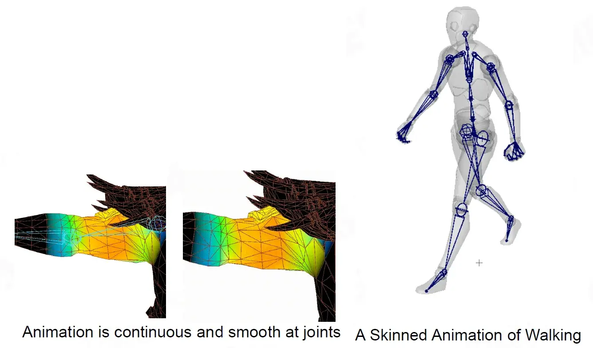
-
Mesh (or skin) is bound to the joints of the skeleton
网格（或皮肤）绑定到骨骼的关节
-
Each vertex can be weighted to multiple joints
每个顶点可以加权到多个关节
Advantages
优点
-
Need less data than per-vertex animation
比逐顶点动画需要更少的数据
-
Mesh can be animated in a natural way (like human "skin")
网格可以以自然的方式进行动画处理（就像人类的“皮肤”）
2D Skinned Animation
{kind=link}
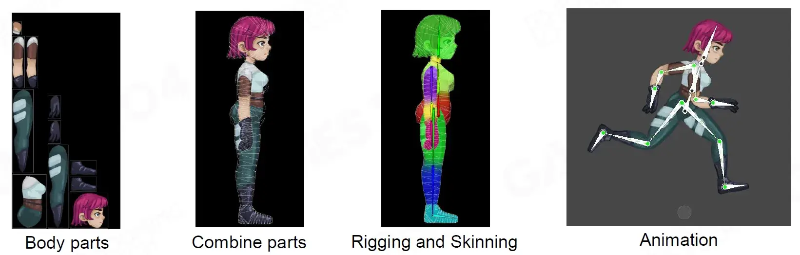
Derived from 3D skinned animation
源自 3D 蒙皮动画
-
Break up character into various body parts
将角色分解为不同的身体部位
-
Create body part meshes and piece them together
创建身体部位网格并将它们拼凑在一起
-
Rigging, skinning and animation
绑定、蒙皮和动画
Physics-based Animation
{kind=link}
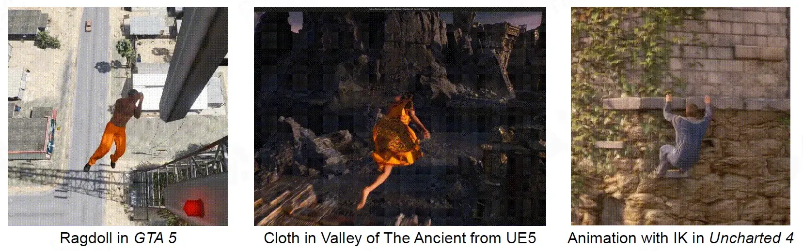
-
Ragdoll
布娃娃
-
Cloth and Fluid simulation
布料和流体模拟
-
Inverse Kinematics (IK)
逆运动学 (IK)
Animation Content Creation
{kind=link}
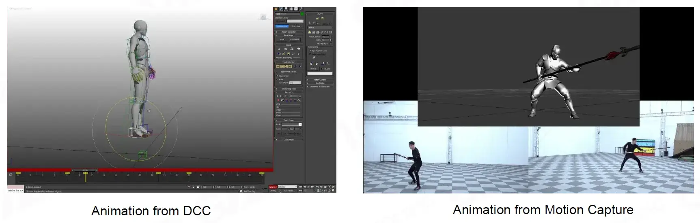
动画内容创作方式：
-
Digital Content Creator + Animator
数字内容创作者 + 动画师
-
Motion Capture
动作捕捉
Skinned Animationimp lementation
蒙皮动画实现
{kind=link}
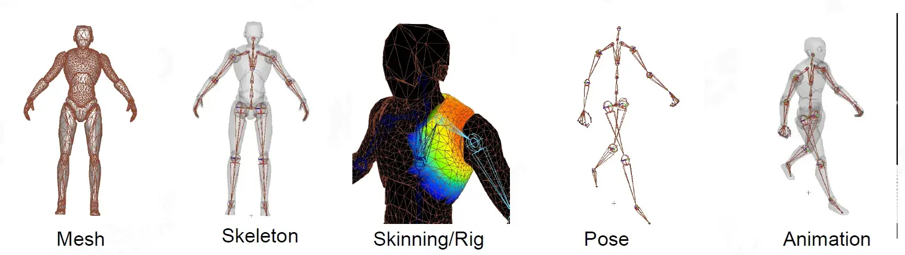
How to Animate a Mesh
如何制作网格动画
-
Create mesh for a binding pose
为绑定姿势创建网格
-
Create a binding skeleton for the mesh
为网格创建绑定骨架
-
"Paint" per-vertices skinning weights to related skeleton
将每个顶点蒙皮权重“绘制”到相关骨架
-
Animate skeleton to desired pose
将骨骼动画化为所需的姿势
-
Animate skinned vertices by skeleton and skinning weights
通过骨架和蒙皮权重对蒙皮顶点进行动画处理
Different Spaces
{kind=link}
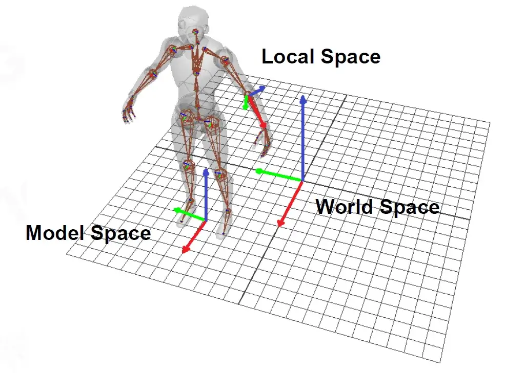
要考虑三个坐标系：
-
Local space, Model space and World space
局部坐标，模型坐标和世界坐标
Skeleton for Creatures
生物骨骼
{kind=link}
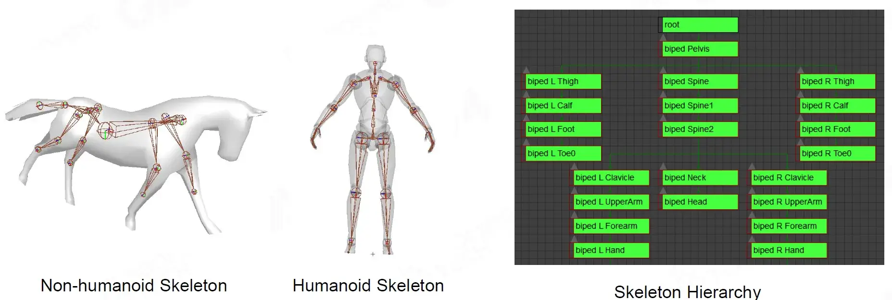
Comprised of a hierarchy of rigid pieces known as joints
由称为关节的刚性部件的层次结构组成
-
One joint is selected as the root
选择一个关节作为根
-
Every joint has a parent joint except the root
除根关节外，每个关节都有一个父关节
Joint vs. Bone
关节和骨骼
{kind=link}
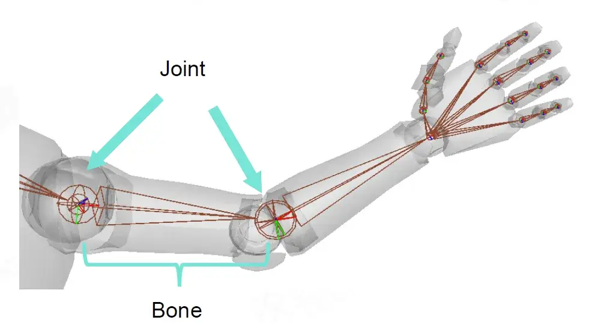
-
The joints are the objects directly manipulated by the animator to control motion
关节是动画师直接操纵以控制运动的对象
-
The bones are the empty space between the joints
骨头是关节之间的空隙
Humaniod Skeleton in Real Game
真实游戏中的人形骨骼
{kind=link}
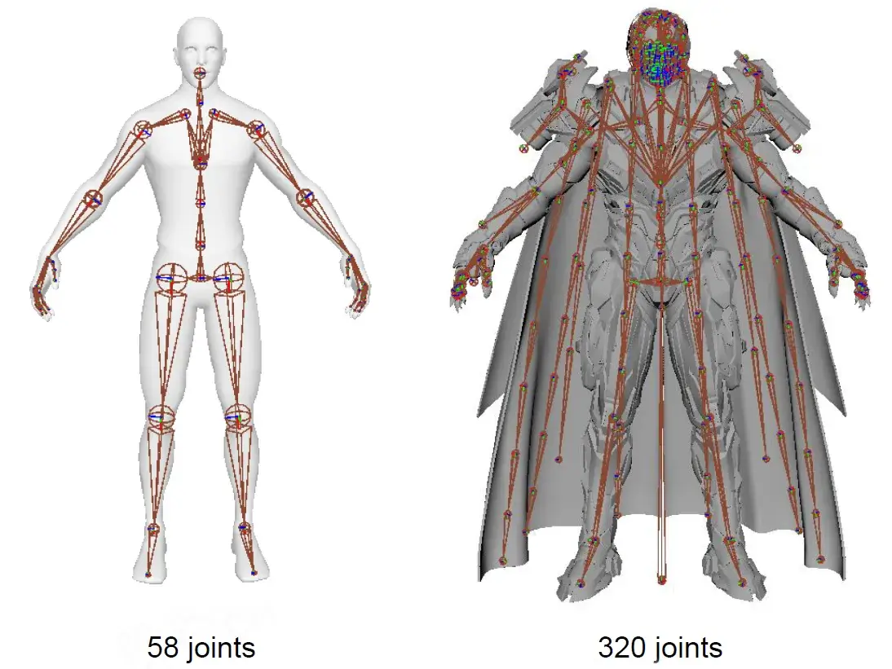
Number of joints in a humaniod skeleton
人形骨骼中的关节数量
-
Normal: 50~100 joints
正常：50~100 个关节
-
May more than 300+ joints includefacial joints and gameplay joints
可能超过 300+ 关节，包括面部关节和游戏关节
Joints for Game Play
{kind=link}
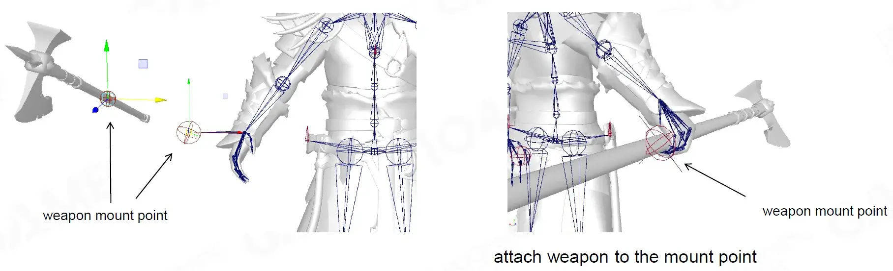
-
Additional joints
附加关节
-
Weapon joint
武器关节
-
Mount joint
安装接头
Where to Start the Skeleton - Root Joint
一般都是髋关节做 Pelvis joint，脚底中心作 Root joint
{kind=link}
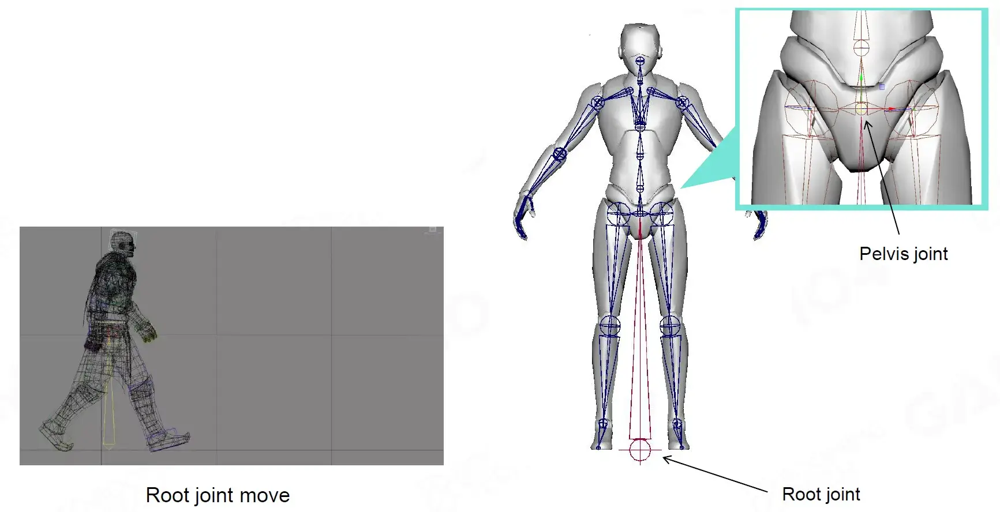
Root joint
根关节
-
The center of the feet
脚的中心
-
Convenient to touch the ground
方便接触地面
Pelvis joint
骨盆关节
-
The first child joint of the root joint
根关节的第一个子关节
-
Human upper and lower body separation
人体上下半身分离
How to Handle Horse Skeleton?
{kind=link}
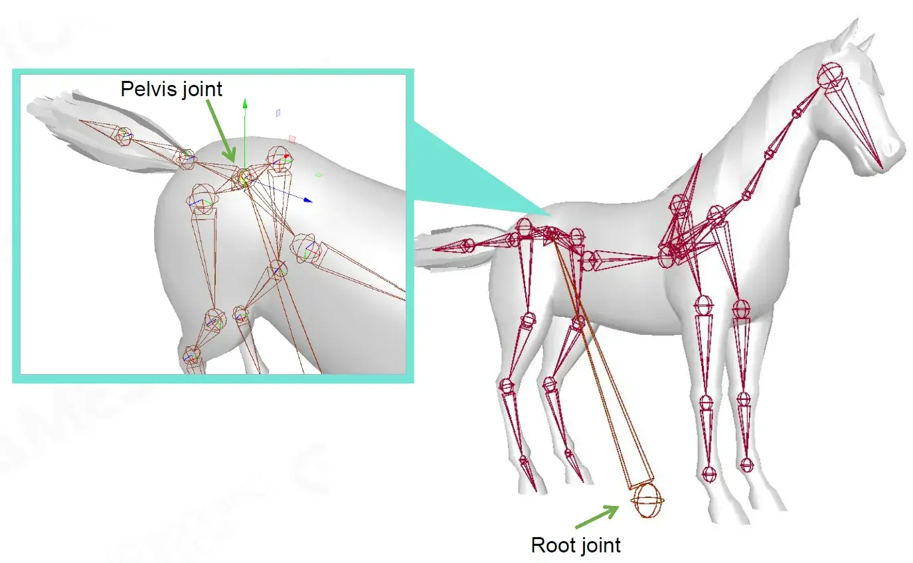
一般把马的 Pelvis joint 和 Root joint 放置在如图位置。
Bind Animation for Objects
为对象绑定动画
{kind=link}
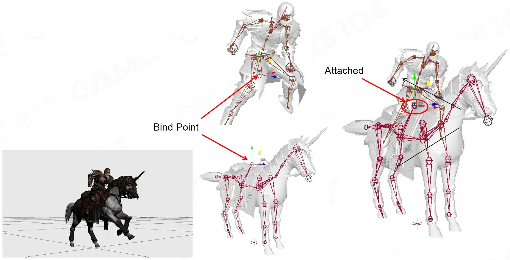
Attach two skeleton's bind point
连接两个骨架的绑定点
Bind Pose-T-pose vs. A-pose
绑定姿势-T 姿势与 A 姿势
{kind=link}
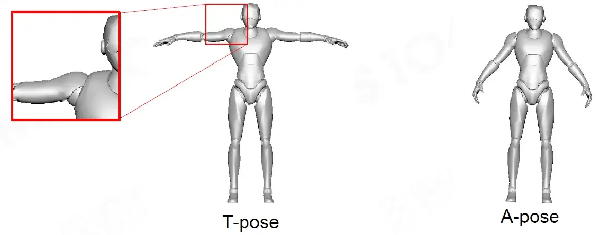
The pose of the 3D mesh prior to being bound to the skeleton
3D 网格在绑定到骨架之前的姿势
-
Keep the limbs away from the body and each other, making the process of binding the vertices to the joints easier
使四肢远离身体和彼此，使将顶点绑定到关节的过程更容易
-
Usually close to natural pose
通常接近自然姿势
T-pose vs A-pose
-
Shoulders in A-pose are more relaxed
A 字式的肩膀更加放松（T 字式的肩膀容易挤压导致扭曲，所以现在更偏好 A 字式）
-
Easy to defarmating in A-pose
轻松以 A 姿势解除武装（？）
Skeleton Pose
Skeleton Pose: A skeleton is posed by transform its joints from the bind pose
骨骼姿势：通过从绑定姿势变换其关节来摆出骨骼姿势
{kind=link}
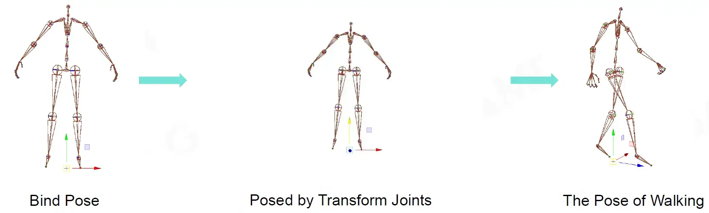
Joint Pose (9 DoFs)
关节姿势（9 个自由度）
-
Orientation (3 DoFs)
方向（3 个自由度）
-
Position (3 DoFs)
位置（3 个自由度）
-
Scale (3 DoFs)
比例（3 个自由度）
Math of 3D Rotation
2D Orientation Math
{kind=link}
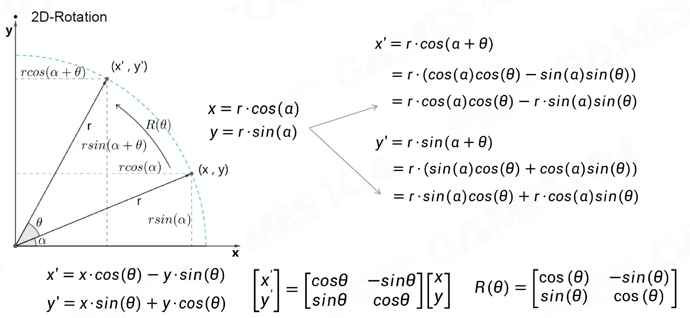
2D 旋转用一个 来表示很简单。
3D Orientation Math
Euler Angle
用欧拉角来表示三维旋转。
-
3D-Rotation by single axis
以 某个轴旋转
{kind=link}
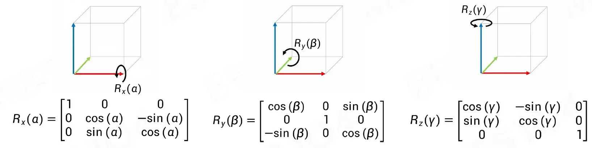
-
3D-Rotation combined by axis sequentially
由 轴顺序组合的 3D 旋转
{kind=link}
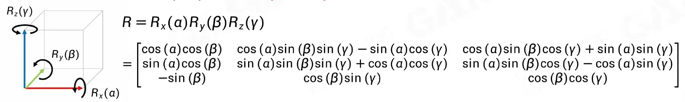
Euler Angle
Euler Angle provides a brief description of 3D rotation and is widely used in many fields
欧拉角提供了 3D 旋转的简要描述，广泛应用于许多领域
{kind=link}
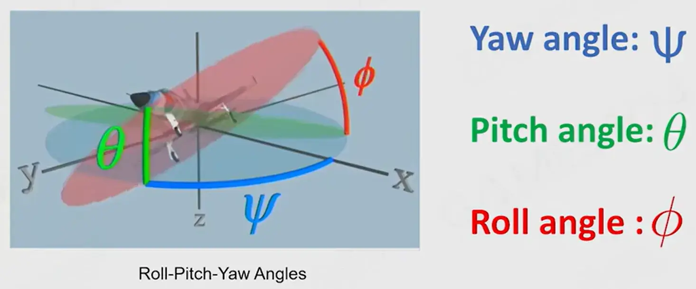
- Yaw angle： 飞机左右转弯
- Pitch angle： 飞机抬头低头
- Roll angle： 飞机左右倾斜
Order Dependence on Euler Angle
欧拉角的阶次依赖性
{kind=link}
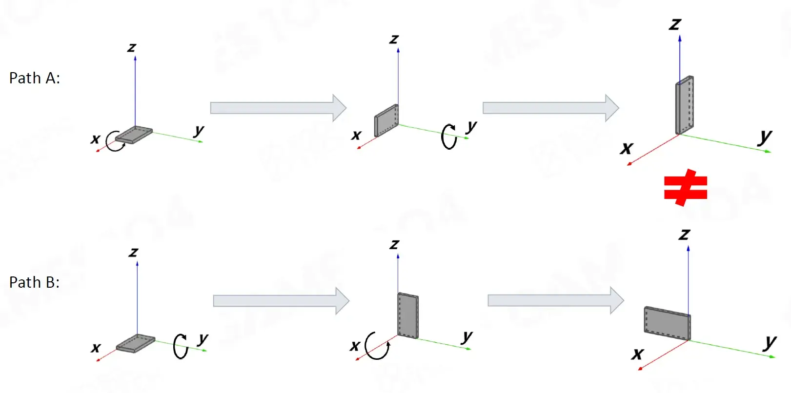
欧拉角旋转看上去直观，但是旋转次序将会影响最终的旋转效果。
Gimbal Lock
万向节锁
{kind=link}
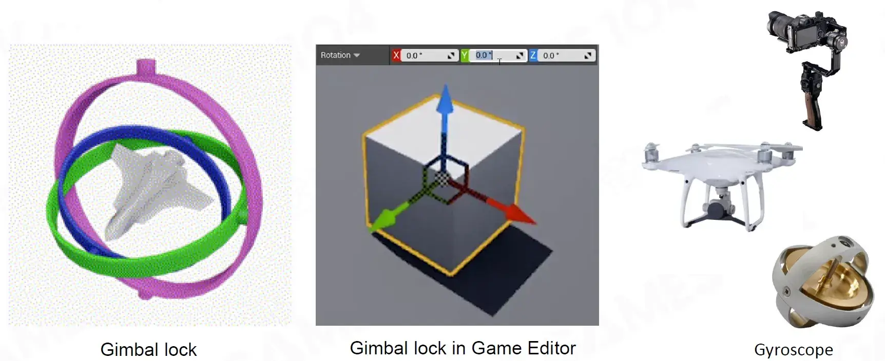
Gimbal Lock 是三维空间中的一个现象，通常发生在使用欧拉角（Euler Angles）描述物体旋转时，尤其是在使用万向节（Gimbal）结构进行旋转时。这个现象会导致失去一个旋转自由度，使得物体在某些情况下无法继续按预期旋转。
为了理解 Gimbal Lock，首先需要了解欧拉角和万向节结构。
欧拉角是一种描述物体旋转的方法，通过三个轴（通常是 X、Y、Z 轴）的旋转角度来表示物体的方向。然而，当旋转过程中某两个轴对齐时，就会发生 Gimbal Lock。
万向节是一种机械结构，由多个轴构成，每个轴都可以绕自己的轴旋转。但当其中两个轴对齐时，就会发生 Gimbal Lock，因为这会使得第三个轴失去了自由度。
具体来说，当两个轴对齐时，旋转操作将不再在三个轴的独立空间内进行，而是会导致旋转操作影响到其他轴，从而导致无法预期的结果。这使得物体在某些情况下无法继续自由旋转，因为其中一个轴的旋转将会影响到其他轴的方向，导致失去了自由度。
为了避免 Gimbal Lock，可以使用其他方法来描述旋转，如四元数（Quaternions），它们不会受到 Gimbal Lock 的限制。此外，在使用欧拉角时，可以采用一些技巧和限制来尽量避免 Gimbal Lock 的发生。
Degeneration of Euler Angle
欧拉角退化
{kind=link}
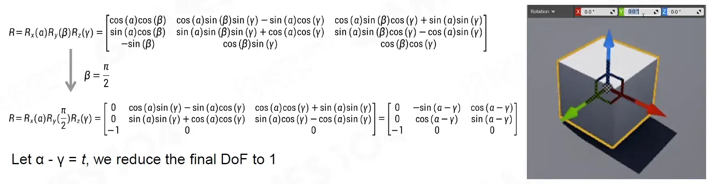
Problems of Euler Angle
欧拉角问题
{kind=link}
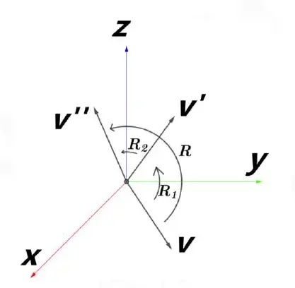
Rotation Combination
旋转结合
{kind=link}
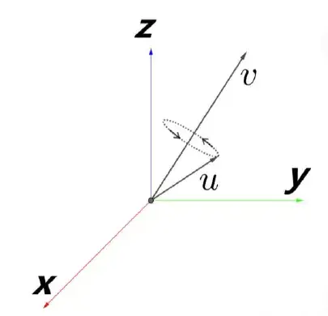
Rotation By Certain Axis
按特定轴旋转
-
Gimbal Lock
万向节锁
Gimbal Lock occurs because of the loss of one DoF
由于失去一个自由度而发生万向节锁定
-
Hard to interpolate
难以插值
Singularity problem make it hard to interpolate
奇点问题使得插值变得困难
-
Difficult for rotation combination
旋转组合困难
Rotation combination need rotation matrix
旋转组合需要旋转矩阵
-
Hard to rotate by certain axis
难以按特定轴旋转
Easy to rotate by axis but hard to others
很容易通过 、、 轴旋转，但对其他人来说很难
Quaternion
四元数用于表示旋转。
它们结构紧凑，不受万向锁影响，可以轻松插值。 Unity 内部使用四元数来表示所有旋转。
它们基于复数，不容易理解。 您几乎不会有机会访问或修改单个四元数分量（、、、）； 大多数情况下，您只需要获取现有旋转（例如，来自 Transform），然后使用它们构造新的旋转 （例如，在两个旋转之间平滑插值）。 您绝大多数时间使用的四元数函数为： Quaternion.LookRotation、Quaternion.Angle、Quaternion.Euler、Quaternion.Slerp、Quaternion.FromToRotation 和 Quaternion.identity。（其他函数仅用于一些十分奇特的用例。）
引入四元数解决万向节锁的问题。
{kind=link}
Every morning in the early part of October 1843, on mycoming down to breakfast, your brother William Edwin and yourself used to ask me: "Well, Papa, can you multiply triples?" Whereto I was always obliged to reply, with a sad shake of the head, "No, Ican onlyadd and subtract them.
1843 年 10 月上旬，每天早上，当我下楼吃早餐时，你的兄弟威廉·埃德温和你自己都会问我：“爸爸，你能乘以三倍吗？”对此，我总是不得不悲伤地摇头回答：“不，我只能加减它们。
Complex Number and 2D Rotation
引入复数概念探讨 2D 旋转问题。
Complex Number
-
Definition
-
Represent as Vector
-
Product
{kind=link}
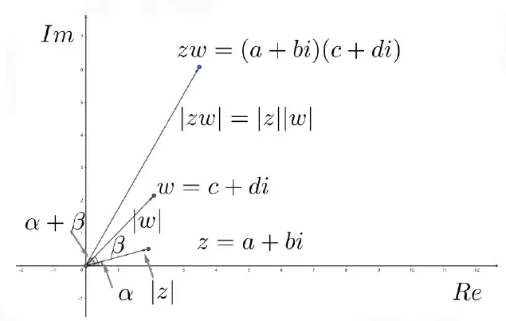
对于角 用 表示，角 用 表示，则 可以用 表示。
Quaternion
类比与 2D，用四元数表示三维的旋转。
Quaternion
-
Definition
-
Represent as two parts pair (real number and vector)
表示为两部分对（实数和向量）
-
Product
用 表示先旋转 再旋转
-
Norm
-
Conjugate
共轭
-
Inverse
Euler Angle to Quaternion
{kind=link}
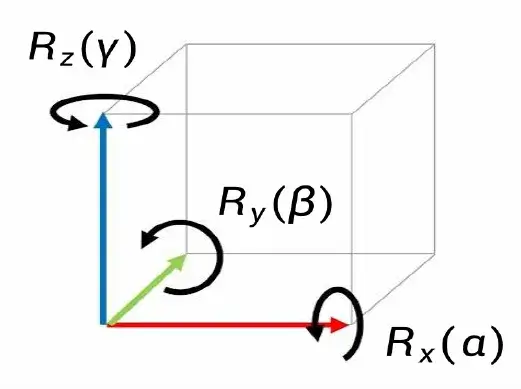
Rotation by Quaternion
Quaternion
-
Vector to quaternion
-
A 3D vector could be written inquaternion format as follow:
-
-
Rotation
Quaternion to Rotation Matrix
Rotation wath by Quaternion
Inverse Resolving
逆旋转
{kind=link}
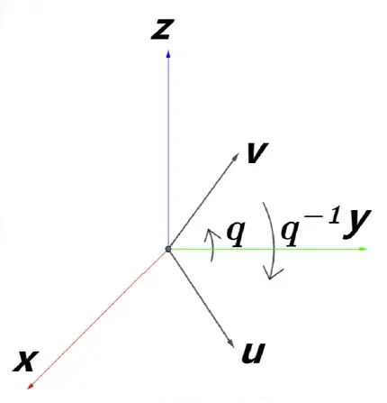
Rotation Combination
复合旋转
q_1^*q_2^*&=(q_2q_1)^* \\ v^{\prime}&=q_1vq_1^* \\ v^{\prime\prime}&=q_2v^{\prime}q_2^* \\ &=q_2q_1vq^*_1q^*_2 \\ &=(q_2q_1)v(q_2q_1)^* \end{aligned}$$ ##### Quaternion between Two Unit Vectors 两个单位向量之间的四元数 {kind=link}
w=u\times v \ q=[u\cdot v+\sqrt{(w\cdot w)+(u\cdot v)^2},w] \ (||u||=||v||=1)
#### Given Axis Rotation by Quaternion Quaternion  - Vector to quaternion 向量到四元数 - A 3D vector $\mathbf v$ could be written in quaternion format as follow: 3D 向量 $\mathbf v$ 可以写成四元数格式，如下所示： $v_q=(0,v)=bi+cj+dk\quad v=\begin{bmatrix}b\\c\\d\end{bmatrix}$ - Rotation - For vector $\mathbf v$, rotated by unit axis $u$ of angle $\theta$, the result vector $v'_q$ 对于向量 $\mathbf v$，按角度 $\theta$ 的单位轴 $u$ 旋转，结果向量 $v'_q$ $$q=(\cos(\frac\theta2),\sin(\frac\theta2)x_u,\sin(\frac\theta2)y_u,\sin(\frac\theta2)z_u)$$ $$v'_q=qv_qq^*=qv_qq^{-1}$$ $u=\begin{bmatrix}x_u\\y_u\\z_u\end{bmatrix}$ is a unit vector represents rotation axis $u=\begin{bmatrix}x_u\\y_u\\z_u\end{bmatrix}$ 是表示旋转轴的单位向量 ### Joint Pose 关节动作 #### Joint Pose - Orientation 关节姿势 - 方向  - Rotation -> Change the Orientation of joints 旋转 -> 更改关节方向 - Most skeleton poses change orientations of joints only 大多数骨骼姿势仅改变关节的方向 #### Joint Pose - Position  - Translate ->change postion 变换->改变位置 - Translate point $P$ to point $P'$ by vector $T$ 通过向量 $T$ 将点 $P$ 变换为点 $B'$  - Usually not changed in humanoid skeleton except the pelvis, facial joint and other special joints 人形骨骼除骨盆、面部关节等特殊关节外通常不发生改变 - Used for stretching models 用于拉伸模型 #### Joint Pose - Scale  - Scale -> change the size of the model 缩放 -> 更改模型的大小 - Uniform vs. Non-uniform Scale 均匀比例与非均匀比例  - Widely used in facial animation 广泛应用于面部动画 - Uniform and non-uniform scale facial ioints 均匀和不均匀比例的面部关节 #### Joint Pose - Affine Matrix  将变换旋转缩放用一个仿射矩阵表示。 #### Joint Pose-Local Space to Model Space 联合姿势局部空间到模型空间  For a joint $j$ in a skinned mesh 对于蒙皮网格中的关节 $j$ - $p(j)$ : Joint $j$'s parent joint $p(j)$ ：关节 $j$ 的父关节 - $M'_{p(j)}$ : Joint $j$'s parent joint pose in local space $M'_{p(j)}$ ：关节 $j$ 的父关节在局部空间中的姿势 $M^m_J$ : joint $J$'s pose in model space $M^m_J$：模型空间中关节 $J$ 的姿势 - Walking the skeletal hierarchy from $J$ to the root: 从 $J$ 到根遍历骨架层次结构： $$M_{j}^{m}=\prod_{j=J}^{0}M_{p(j)}^{l}$$ #### Joint Pose interpolation-Local Space vs.Model Space 关节姿态插值-局部空间与模型空间  Local Space 局部空间 - Less data with delta transform 通过增量变换减少数据 - Convenient for interpolation or blend 方便插值或混合  Model Space 模型空间 - Incorrect for interploation 插值不正确 #### Single joint Skinning 单关节蒙皮  Vertex $V$'s position in joint $J$'s local space is fixed 顶点 $V$ 在关节 $J$ 的局部空间中的位置是固定的 Attach the vertices of a mesh to a posed skeleton 将网格的顶点附加到已摆好姿势的骨架上 - Each vertex can be bound to one or more joints with a weight parameter 每个顶点可以通过权重参数绑定到一个或多个关节 - The vertex position in each bound joint's local space is fixed 每个绑定关节局部空间中的顶点位置是固定的 #### Skinning Matrix 蒙皮矩阵  **Bind Pose**: the skeleton pose for binding **绑定姿势**：绑定的骨骼姿势 For a mesh vertex $V$ which is bound to a joint $J$ 对于绑定到关节 $J$ 的网格顶点 $V$ - $V^m_b$: $V$'s position in **model space** within **bind pose** $V^m_b$：$V$ 在**模型空间**中**绑定姿势**中的位置 - $V^l_b$ : $V$'s position in **local space** within **bind pose** $V^l_b$ ：$V$ 在**绑定姿势**内**局部空间**中的位置 - $M^m_{b(j)}$: $J$'s pose in **model space** within **bind pose** $M^m_{b(j)}$：$J$ 在**模型空间**中的**绑定姿势**内的姿势 $V$'s position in **local space** at any time $t$ is fixed as $V$ 在任何时刻 $t$ 在 **局部空间** 中的位置固定为 $$V'(t)\equiv V'_b=(M_{b(J)}^m)^{-1}\cdot V_b^m$$ --- $M^m_j(t)$: joint $J$'s pose in **model space** at time $t$ $M^m_j(t)$：$J$ 在 $t$ 时刻在**模型空间**中的姿势 $$M_j^m(t)=\prod_{j=J}^0M'_{p(j)}(t)$$ $V^m(t)$: $V$'s position in **model space** at time $t$ $V^m(t)$：$V$ 在 $t$ 时刻在**模型空间**中的位置 $$V^m(t)=M_j^m(t)\cdot V_j^1=M_j^m(t)\cdot(M_{b(J)}^m)^{-1}\cdot V_b^m$$ - $M_j^m(t)\cdot(M_{b(J)}^m)^{-1}$: Inverse Bind Pose Matrix Skinning Matrix: $$K_j=M_j^m(t)\cdot(M_{b(J)}^m)^{-1}$$ #### Representing a Skeleton in Memory 代表内存中的骨骼 - The name of the joint, either as a string or a hashed 32-bit string id 关节的名称，可以是字符串，也可以是散列的 32 位字符串 ID - The index of the joint's parent within the skeleton 骨骼中关节父级的索引 - The inverse bind pose transform is the inverse of the product of the translation, rotation and scale 逆绑定姿势变换是平移、旋转和缩放乘积的逆 ```C struct Joint { const string m_joint name; // the name of joint UInt8m_parent_joint_index; // the index of parent joint or 0xFF if root Translation m_bind_pose_translation; // bind pose:translation Rotation m_bind_pose_rotation; // bind pose:scale Matrix4X3m_inverse_bind_pose_transform; // inverse bind pose 可以通过计算得到，不过为了节省时间，事先算好 } struct Skeleton { UInt m_joint_count; // number of iointsm joints Joint m_joints[]; // array of joints }; ``` #### Skinning Matrix Palette 蒙皮矩阵调色板 An array of skinning matrices for each joint 每个关节的蒙皮矩阵数组 - To be used by GPU in shaders 由 GPU 在着色器中使用 - Optimization: count the transform matrix $M^W$ for **model space** to world space 优化：计算 **模型空间** 到世界空间的变换矩阵 $M^W$ The optimized **skinning matrix** of joint $J$ is 关节 $J$ 的优化**蒙皮矩阵**为 $$K'_j=M^w\cdot M_j^m(t)\cdot(M_{b(J)}^m)^{-1}$$ #### Weighted Skinning with Multi-joints 多关节加权蒙皮  For a mesh vertex $V$ which is bound to $N$ joints 对于绑定到 $N$ 关节的网格顶点 $V$ - $W_i$: the Skinning Weight of the $i$-th bound joint $W_i$：第 $i$ 个绑定关节的蒙皮权重 #### Weighted Skinning Blend 加权蒙皮混合  For a vertex $V$ which is bound to $N$ joints $J_0$ to $J_{N-1}$ 对于绑定到 $N$ 关节 $J_0$ 到 $J_{N-1}$ 的顶点 $V$ - $K_{j_{i}}(t)$: the skinning matrix of joint $J_i$ at time $t$ $K_{j_{i}}(t)$：关节 $J_i$ 在时间 $t$ 的蒙皮矩阵 Transform $V$'s position in joint $J$'s **local space** to **model space**: 将 $V$ 在关节 $J$ 的 **局部空间** 中的位置转换为 **模型空间**： $$V_{J_i}^m(t)=K_{J_i}(t)\cdot V_{b(J_i)}^m$$ $V$'s position in **model space**: $V$ 在**模型空间**中的位置： $$V^m(t)=\sum_{i=0}^{N-1}W_i\cdot V_{j_i}^m(t)$$ #### Clip  A sequence of skeleton poses 一系列骨骼姿势 #### Interpolation between Poses 姿势之间的插值  - Animation's timeline is continuous 动画的时间线是连续的 #### Interpolation 插值  - Calculate the pose between key poses 计算关键姿势之间的姿势 #### Simple lnterpolation of Translation and Scale 平移和比例的简单插值 - Linear interpolation (LERP) 线性插值（LERP） $f(x)=(1-\alpha)f(x_1)+\alpha f(x_2)$ $\alpha=\frac{x-x_1}{x_2-x_1},x_1<x_2,x\in[x_1,x_2]$  Translation: $$T(t)=(1-\alpha)T(t_1)+\alpha T(t_2)$$ Scale: $$S(t)=(1-\alpha)S(t_1)+\alpha S(t_2)$$ #### Quaternion interpolation of Rotation 旋转的四元数插值  - NLERP for quaternion 四元数的 NLERP - Liner interpolation 线性插值 $q_t=\mathrm{Lerp}(q_{t1},q_{t2},t)=(1-\alpha)q_{t1}+\alpha q_{t2}$ $a=\frac{t-t_1}{t_2-t_1},t_1<t_2,t\in[t_1,t_2]$ - Normalization 归一化 $q_t'=\mathrm{Nlerp}(q_{t1},q_{t2},t)=\frac{(1-\alpha)q_{t1}+\alpha q_{t2}}{||(1-\alpha)q_{t1}+\alpha q_{t2}||}$ #### Shortest Path Fixing of NLERP - The shortest path  $$q_t=\begin{cases}\frac{(1-\alpha)q_{t1}+\alpha q_{t2}}{||(1-\alpha)q_{t1}+\alpha q_{t2}||}&q_{t1}\cdot q_{t2}\geq0\\\frac{(1-\alpha)q_{t1}-\alpha q_{t2}}{||(1-\alpha)q_{t1}-\alpha q_{t2}||}&q_{t1}\cdot q_{t2}<0\end{cases}$$ $$\begin{aligned}&q_{t1}=a+bi+cj+dk\\&q_{t2}=e+fi+gj+hk\end{aligned}$$ 解得： $$\begin{aligned} q_{t1}\cdot q_{t2}& =ae+bf+cg+dh \\ &=\cos(\theta)||q_{t1}|||||q_{t2}|| \end{aligned}$$  #### Problem of NLERP  Non-constant angular speed of NLERP NLERP 非恒定角速度 #### SLERP: Uniform Rotation Interpolation SLERP：均匀旋转插值  SLERP for quaternion 四元数的 SLERP $$\begin{aligned}&q_t=\mathrm{Sler}p(q_{t1},q_{t2},t)=\frac{\sin\left((1-t)\theta\right)}{\sin\left(\theta\right)}\cdot q_{t1}+\frac{\sin\left(t\theta\right)}{\sin\left(\theta\right)}\cdot q_{t2}\\&\theta=\arccos(q_{t1}\cdot q_{t2})\end{aligned}$$ 用到了反三角函数，计算速度慢。 #### NLERP vs. SLERP  - NLERP - Non-constant angular speed 非恒定角速度 - Almost constant angular speed when $\theta$ is small 当 $\theta$ 很小时，角速度几乎恒定 - SLERP - Constant angular speed 恒定角速度 - May have zero-divide problem when $\theta$ is small 当 $\theta$ 很小时可能会出现零除问题 - Combination - Widely used in 3A-game development 广泛应用于 3A 游戏开发 - Use SLERP when $\theta$ is large, and NLERP when $\theta$ is almost zero 当 $\theta$ 很大时使用 SLERP，当 $\theta$ 几乎为零时使用 NLERP #### Simple Animation Runtime Pipeline  在 CPU 计算好变换后的动作，剩下的交给 GPU。 ### Animation Compression 动画压缩 #### Animation Clip Storage 动画剪辑存储  - Animation clip split to seperated joint pose sequences 动画剪辑分割为单独的关节姿势序列 - Joint pose sequence splits to seperated translation, rotation and scale tracks 关节姿势序列分割为单独的平移、旋转和缩放轨道 #### Animation Data Size 动画数据大小 - Single clip size estimation 单个剪辑尺寸估计  e.g. To develop a game containing over 150 unique character,like League of Legends,each of these has 30 clips with length about 5sIt takes about: 1.26~2.51GB 例如开发一款包含超过 150 个独特角色的游戏，例如英雄联盟，每个游戏有 30 个长度约为 5 秒的剪辑，大约需要：1.26~2.51GB #### Distinction among Animation Tracks 动画轨道的区别 For the same joint, rotation, translation and scale changes vary greatly 对于同一个关节，旋转、平移和尺度变化差别很大  #### Distinction among Joints 关节的区别  The motion of different joints varies greatly 不同关节的运动差异很大 #### Simplest Compression -DoF Reduction 最简单的压缩 - 自由度缩减（一般骨骼动画只有关节的旋转） - Scale 缩放 - Discard scale track (Usually not changed in humanoid skeleton except facial joints) 丢弃比例轨迹（除面部关节外，人形骨骼中通常不会改变） - Translate 平移 - Discard translate track (Usually not changed in humanoid skeleton except the pelvis, facial joint and other specialolnts) 丢弃平移轨迹（除了骨盆、面部关节和其他特殊部位外，人形骨骼中通常不改变） #### Keyframe  A key frame (or keyframe) in animation and filmmaking is a drawing or shot that defines the starting and ending points of any smooth transition 动画和电影制作中的关键帧是定义任何平滑过渡的起点和终点的绘图或镜头 #### Keyframe Extraction - Linear Keys Reduction 关键帧提取 - 线性关键点缩减  Remove those frames which can be fitted by linear interpolation of adjacent frames 删除那些可以通过相邻帧线性插值拟合的帧 ```vb KeyFrame = {} for i = 1 to n-1 do frame_interp = Lerp(frame[i-1],frame[i+1]) error = Diff(frame[i],frame_interp) if isNotAcceptable(error) then KeyFrame.insert(frame[i]) end end ``` #### Catmul-Rom Spline Catmul-Rom 样条线（有损压缩）  Four control points $P_0$, $P_1$, $P_2$, $P_3$, will make a curve from $P_1$ to $P_2$ 四个控制点 $P_0$、$P_1$、$P_2$、$P_3$ 将形成一条从 $P_1$ 到 $P_2$ 的曲线 - $\alpha$ : affects how sharply the curve bends at control points (usually $\alpha=0.5$) $\alpha$：影响曲线在控制点处的弯曲程度（通常$\alpha=0.5$） - $t$: the interpolation coefficient $t$：插值系数 Interpolate on the curve with $t$ in range $(0,1)$ 在曲线上使用 $t$ 在 $(0,1)$ 范围内进行插值 $$P(t)=[1\quad t\quad t^2\quad t^3]\begin{bmatrix}0&1&0&0\\-\alpha&0&\alpha&0\\2\alpha&\alpha-3&3-2\alpha&-\alpha\\-\alpha&2-\alpha&\alpha-2&\alpha\end{bmatrix}\begin{bmatrix}P_0\\P_1\\P_2\\P_3\end{bmatrix}$$  Fitting Process - Make a Catmull-Rom spline with the middle 2 control points at both ends of the original curve 制作一条 Catmull-Rom 样条线，中间 2 个控制点位于原始曲线的两端 - lteratively add control points like binary search 交替添加控制点，如二分搜索 - Calculate inner curve by the most closet 4 points 通过最接近的 4 个点计算内曲线 - Repeat until the error of each frame is under the threshold 重复直到每帧的误差低于阈值 #### Float Quantization Use less bits integer to represent limited range and accuracy float value 使用较少位的整数来表示有限范围和精度的浮点值 $$DesiredBits=[log_2\frac{Range}{Accuracy}]$$ Example Translation Range $[0, 10]$, Accuracy 0.001m: 示例变换范围 $[0, 10]$，精度 0.001m： $$DesiredBits=\lceil\log_2\frac{10}{0.001}\rceil=14bits$$ In general, 16 bits can cover pose's float range and accuracy requirements in the game engine 一般来说，16 位可以覆盖游戏引擎中 pose 的浮动范围和精度要求 Example of linear quantizing a 32bit float to a 16bit unsigned integer. 将 32 位浮点数线性量化为 16 位无符号整数的示例  #### Quaternion Quantization 四元数量化 - 3 numbers is enough to represent a **unit quaternion** like $q= (a,b,c, 1- (a^2+ b^2 + c^2))$ 3 个数字足以表示一个**单位四元数**，例如 $q= (a,b,c, 1- (a^2+ b^2 + c^2))$ - The range of the rest 3 numbers could be limited in $\left[-\frac{1}{\sqrt2}, \frac{1}{\sqrt2}\right]$ , if always omitingthe number with largest absolute value 其余 3 个数字的范围可以限制在 $\left[-\frac{1}{\sqrt2}, \frac{1}{\sqrt2}\right]$ 中，如果总是省略绝对值最大的数字 $$a^2+b^2+c^2+d^2=1,|a|\geq\max(|b|,|c|,|d|)$$ $$2b^2<a^2+b^2<a^2+b^2+c^2+d^2=1$$ $$b^2\leq\frac12\Rightarrow-\frac1{\sqrt2}\leq b\leq\frac1{\sqrt2}$$ Similarly 类似地, $-\frac1{\sqrt{2}}\leq c\leq\frac1{\sqrt{2}}$ and $-\frac1{\sqrt{2}}\leq d\leq\frac1{\sqrt{2}}$  - Use 2 bits to represent which number is discard 使用 2 位来表示哪个数字被丢弃 - Use 15 bits storage for each number, ranged in $\left[-\frac{1}{\sqrt2},\frac{1}{\sqrt2}\right]$, precision $\sqrt2/32767≈0.000043$ 每个数字使用 15 位存储，范围为$\left[-\frac{1}{\sqrt2},\frac{1}{\sqrt2}\right]$，精度$\sqrt2/32767≈0.000043$ - Finally a quaternion could store in a 48 bits storage, cutting down from 128 bits 最终四元数可以存储在 48 位存储器中，从 128 位减少 #### Size Reduction from Quantization 量化的尺寸减小  - The key point of quantization is to find a proper error threshould, and use as less bits of storage as possible 量化的关键是找到合适的误差阈值，并使用尽可能少的存储位 - Keyframe and quantization can use together to obtain a better compression ratio 关键帧和量化可以一起使用以获得更好的压缩比 #### Error Propagation 错误传播  Error cuased by compression of animation data will accumulate between bones 动画数据压缩引起的误差会在骨骼之间累积 - Bones store local space transformation data 骨骼存储局部空间变换数据 - Bones are organized by hierachy 骨骼按层次结构组织 #### Joint Sensitivity to Error 联合错误敏感性 Some special parts require high precision animation. 一些特殊零件需要高精度的动画。  由动画有损压缩导致的动画错误。 #### Measuring Accuracy - Data Error 测量精度 - 数据错误  Calculate the error with the diff between the interpolated transform data and the origin 计算插值变换数据与原点之间的差异的误差 - Translation Error: $||T_1-T_2||$ - Rotation Error: $||R_1-R_2||$ - Scale Error: $||S_1-S_2||$ #### Measuring Accuracy - Visual Error 测量精度 - 视觉误差  Calculate the error with the diff betweent the interpolated vertex and the desired vertex 计算插值顶点与所需顶点之间的差异的误差  Hard to cacluate the visual error of every vertex 很难计算每个顶点的视觉误差 - Great amount of calculation 计算量大 Estimate the visual error 估计视觉误差 - Fake vertex: Two orthogonal virtual vertices at a fixed distance from the joint (not co-linear with the joint rotation axis) 假顶点：距关节固定距离的两个正交虚拟顶点（与关节旋转轴不共线） - Fake Vertex Distance Approximation 假顶点距离近似 - character bones 2~10cm 人物骨头 2~10 厘米 - large animated objects 1~10m 大型动画物体 1~10m #### Error Compensation - Adaptive Error Margins 误差补偿 - 自适应误差裕度  - Adaptive Error Margins 自适应误差容限 - Use different accuracy threshold for different joint from end to root, in order to reduce error caused by parent joint 对从头到尾的不同关节使用不同的精度阈值，以减少父关节引起的误差 #### Error Compensation - in Place Correction 误差补偿 - 就地校正  - Process 过程 - Select a point on every bone except root 在除根部之外的每个骨骼上选择一个点 - Compute the rotation of every compressed bone from root that takes the tagged point closet to its actual position in model space 计算从根部开始的每个压缩骨骼的旋转，使标记点最接近其在模型空间中的实际位置 - Add the rotation to transform of compressed data 添加旋转来转换压缩数据 - Pros 优点 - No Overhead during decompression period since all data already computed during compression 解压期间没有开销，因为所有数据已在压缩期间计算 - Cons 缺点 - May produce memory overhead because of possible modification to ConstantTrack 由于可能对 ConstantTrack 进行修改，可能会产生内存开销 - May produce NoiseTrack because it directly changes keyframe data 可能会产生 NoiseTrack，因为它直接更改关键帧数据 - Compression may cost more time 压缩可能会花费更多时间 ### Animation DCC Process In general, the Animation DcC (Digital Content Creating) process includes: 一般来说，动画 DcC（数字内容创建）过程包括： - Mesh 网格 - Skeleton binding 骨骼绑定 - Skinning 蒙皮 - Animation creation 制作动画 - Exporting 输出 #### Mesh building  - Blockout Stage: Create a rough outline of the character 草图阶段：创建角色的粗略轮廓 - High Poly Stage: improve the building precision 高多边形阶段：提高模型精度 - Low Poly Stage: Divide the surface into meshes 低多边形阶段：将表面划分为网格 - Texture Stage: Add texture to character 纹理阶段：为角色添加纹理 #### Mesh Adjustment for Animation 动画的网格调整  - Mesh dividing is vital for animation creating, it defines how the skin curves 网格划分对于动画创建至关重要，它定义了皮肤的弯曲方式 - Animation turns to be weird if the meshes are too sparse 如果网格太稀疏，动画会变得很奇怪 - Dense meshes cause a performance overhead 密集的网格会导致性能开销 #### Exporting  - FBX file - Model mesh - skeleton - skinning data - animation clip FBX: the industry-standard 3D asset exchange file format for games. lt isdeveloped by Autodesk as a proprietary format. FBX：游戏的行业标准 3D 资产交换文件格式。它是由 Autodesk 开发的专有格式。 ## 第九节：高级动画技术：动画树、IK 和表情动画 Animation System ### Advanced Animation Technology 高级动画技术 ### How to Achieve the Animation Effect in Real Game? 如何实现真实游戏中的动画效果？  将动画师制作的各种 simple animation clips 混合成 complex animations。 ### Animation Blending - The term animation blending refers to any technique that allows more than one animation clip to contribute to the final pose of the character 术语“动画混合”是指允许多个动画剪辑为角色的最终姿势做出贡献的任何技术 #### Case: Walking to Running  - Assume the character walks at 1.5m/s and runs at 3.0m/s in our game 假设角色在我们的游戏中以 1.5m/s 的速度行走并以 3.0m/s 的速度奔跑 - As the character's speed increase, we want to switch its animation from walking to running 随着角色速度的增加，我们希望将其动画从步行切换为跑步 #### Math of Blending: LERP  Use LERP to get intermediate frame from poses of different clips 使用 LERP 从不同剪辑的姿势中获取中间帧 Weight is controlled by game parameters, i.e, character speed 重量由游戏参数控制，即角色速度 #### Calculate Blend Weight 计算混合权重（依据速度） | 参数 | 描述 | | ------------------------------- | ------------- | | $\text{speed}_{\text{current}}$ | current speed | | $\text{speed}_{\text{1}}$ | speed of clip1 | | $\text{speed}_{\text{2}}$ | speed of clip2 | | $\text{weight}_1$ | calculated weight of clip1 | | $\text{weight}_2$ | calculated weight of clip2 | $$weight_1=\frac{speed_{current}-speed_2}{speed_1-speed_2}$$ $$\mathrm{weight}_2=\frac{\mathrm{speed}_{current}-\mathrm{speed}_1}{\mathrm{speed}_2-\mathrm{speed}_1}$$ #### Align Blend Timeline 对齐混合时间线  #### Case: Walking to Running In order to achieve the desired effect, we need a lot of animation clips with intermediate speeds. 为了达到想要的效果，我们需要大量中等速度的动画片段。 Let the animators produce a whole bunch? 让动画师制作一大堆？（这是不可能的） ### Blend Space 混合空间 #### 1D Blend Space: Directional Movement 一维混合空间：定向运动  Players can move forward from multiple angles 玩家可以从多个角度前进 We can blend any angle from three clips: 我们可以混合三个剪辑中的任意角度： - Strafe Left clip - Run Forward clip - Strafe Right clip The technique is called 1D Blend Space. 该技术称为一维混合空间。 #### Directional Walking and Running 定向步行和跑步  Players can change direction and speed at the same time 玩家可以同时改变方向和速度 We simply place the two 1D Blend Spaces orthogonally and we get an 2D Blend Space 我们只需将两个一维混合空间正交放置，就得到一个二维混合空间 #### 2D Blend Space  Since the movement speed in the lateral direction is lower in the forward direction, the character should enter the running state in a lower speed in the lateral direction 由于横向移动速度在前进方向上较低，因此角色应该以较低的横向速度进入奔跑状态 #### Case: Applauding on Different Poses 案例：不同姿势鼓掌  There are multiple robots in different poses in the scene 场景中有多个机器人摆出不同的姿势 We need to make applause animations for various poses separately 我们需要分别为各种姿势制作掌声动画 Is it possible to make a single applauding animation that can be applied to all poses? 是否可以制作一个可以应用于所有姿势的鼓掌动画？ #### Skeleton Masked Blending 骨架蒙版混合  The set of all blend percentages for the entire skeleton $\{\beta_j\}|^{N-1}_{j=0}$ is sometimes called a blend mask $b$ 整个骨架的所有混合百分比的集合 $\{\beta_j\}|^{N-1}_{j=0}$ 有时称为混合蒙版 $b$ #### Case: Warm Welcome from the Robots 案例：机器人的热烈欢迎  We will let robots **applauding** in different poses 我们会让机器人以不同的姿势鼓掌（用蒙版结合两个动画 clips） #### Additive Blending  Add a difference clip into a regular clip to produce a new clip 将差异剪辑添加到常规剪辑中以生成新剪辑 Additive Blending introduces a new kind of animation called a **difference clip**, which represents the difference between two regular animation clips. 添加剂混合引入了一种称为**差异剪辑**的新型动画，它表示两个常规动画剪辑之间的差异。 A difference clip can be added into a regular animation clip in order to produce interesting variations in thepose and movement of the character. 可以将差异剪辑添加到常规动画剪辑中，以便在角色的姿势和运动中产生有趣的变化。 #### Nodding to Camera  朝向摄像机点头的动画。 #### Additive Blending - Abnormal Bone Results 添加剂混合 - 骨骼结果异常  Additive blends are more likely to have abnormal bone results 添加剂混合物更有可能产生异常的骨骼结果 #### Animation Blending Summary 动画混合总结  - 1D Blend Space 一维混合空间 - Blend poses based on a single input value 基于单个输入值混合姿势 - 2D Blend space - Blend poses based on two input values 基于两个输入值混合姿势 - Triangular blend 三角形混合 - Masked Blending 蒙版混合 - Additive Blending 添加剂混合 ### Action State Machine (ASM) 有限动画状态机 #### Case: Jumping  How to animate jump? 如何制作跳跃动画？ Blend Space is synchronous, but jump is stateful 混合空间是同步的，但跳跃是有状态的 We usually model the jumping action via a finite state machine, commonly known as the Action State Machine (ASM) 我们通常通过有限状态机（通常称为动作状态机（ASM））来模拟跳跃动作 #### ASM Definition ASM 定义  - ASM consists of nodes and transitions ASM 由节点和转换组成 - Node types 节点类型 - Blend space 混合空间 - Clip 片段 ```C# class ActionstateMachineclipNode { Animationclip m_clip; bool m_is_loop; }; class ActionstateMachineBlendSpaceNode { Blendspace m_blend_space; bool m_is_loop; }; ``` - Transition type 过渡型 - simply “pop" from one state to another 只需从一种状态“弹出”到另一种状态 - cross-fade from one state to the next 从一种状态交叉淡入淡出到另一种状态 - Special transitional states 特殊过渡状态 #### Cross Fades 交叉淡入淡出  Two common ways 两种常见方式 - Smooth transition 平稳过渡 - restriction: the two clips must be looping animations, and their timelines must be synchronized 限制：两个剪辑必须是循环动画，并且它们的时间线必须同步 - Frozen transition 冻结过渡 #### Cross Fades Curve  Different cross fades curve could be used for different demands 不同的交叉淡入淡出曲线可用于不同的需求 #### Animation State Machine in Unreal 虚幻中的动画状态机  - State: a blueprint graph which outputs a pose 状态：输出姿势的蓝图 - Transition : control when to change state and how to blend (Multi) 过渡：控制何时改变状态以及如何混合（多） #### Layered ASM 分层状态机  different parts of a character's body to be doing different, independent or semi-independent actions simultaneously 角色身体的不同部位同时做不同的、独立或半独立的动作 ### Animation Blend Tree 现代游戏引擎常用的方法——动画混合树 #### Blend Tree 混合树  Structure layered ASMs and operations as a tree 将分层 ASM 和操作构建为树 - Inspired by expression tree 受到表达式树的启发 - Easy to understand for animators 动画师易于理解 For a blend tree 对于混合树 - Non-terminal nodes and terminal nodes (leaf nodes) 非终端节点和终端节点（叶节点） - The result of each non-terminal node is a pose 每个非终端节点的结果是一个位姿 #### LERP Blend Node LERP 混合节点  - Binary LERP node 二进制 LERP 节点 - Basic non-terminal node in blend tree 混合树中的基本非终端节点 - LERP two input poses with weight $\beta$ into one output pose LERP 将权重 $\beta$ 的两个输入姿势转化为一个输出姿势 Usually extended to handle multiple inputs(e.g. Ternary/Quad LERP node) 通常扩展为处理多个输入（例如三元/四元 LERP 节点） #### Additive Blend Node 加法混合节点  - Basic non-ternimal node in blend tree 混合树中的基本非终止节点 - Add the second input pose (usually a difference one) into the first input pose by weight $\beta$ 按权重 $\beta$ 将第二个输入姿势（通常是差异姿势）添加到第一个输入姿势中 #### Express Layered ASM in Blend Tree 在混合树中表达分层 ASM  Use a blend tree to describe the desired final pose of ASMs 使用混合树来描述 ASM 所需的最终姿态 #### Blend Tree Nodes 混合树节点  Terminal node (Leaf Nodes) 终端节点（叶节点） - Clip - Blend Space - ASM Non-terminal node (No-Leaf Nodes) 非终端节点（No-Leaf Nodes） - Binary LERP blend node 二进制 LERP 混合节点 - Ternary (triangular) LERP blend node 三元（三角形）LERP 混合节点 - Binary additive blend node 二元加法混合节点 #### Unreal Animation Blueprint 虚幻动画蓝图  A blueprint graph which outputs a final pose 输出最终姿势的蓝图 - Take clip poses or the results of ASMs as input 将剪辑姿势或 ASM 结果作为输入 - Blend input poses by different methods 通过不同的方法混合输入姿势 ### Bend Tree Control Parameters 弯曲树控制参数 - node search 节点搜索 provide a way for higher-level code to find blend nodes in the tree 为高层代码提供一种在树中查找混合节点的方法 - named variable 命名变量 allow names to be assigned to the individual control parameters. The controlling code can look up a control parameter by name in order to adjust its value 允许为各个控制参数分配名称。控制代码可以通过名称查找控制参数以调整其值 - control structure 控制结构 a simple data structure, contains all of the control parameters for the entire character. The nodes in the blend tree(s) are connected to particular control parameters 一个简单的数据结构，包含整个角色的所有控制参数。混合树中的节点连接到特定的控制参数 Animation blend tree is way more complicated that those classic notes (i,e, event nodes, calculation/logic nodes and special blending and flow control nodes) 动画混合树比那些经典注释（即事件节点、计算/逻辑节点以及特殊混合和流程控制节点）要复杂得多。 #### Unreal Animation Blueprint Control 虚幻动画蓝图控制  Named variables as members in animation blueprint 命名变量作为动画蓝图中的成员 - Can be updated through blueprint 可以通过蓝图进行更新 - Can be used anywhere inside the Blend Tree 可以在混合树内的任何地方使用 #### Unreal5 Animation Tree Sample  ### Inverse Kinematices (IK) 逆运动学 (IK) #### Basic Comcepts  - End-effector 末端执行器 The bone which is expected to be movedto a desired position 预计将移动到所需位置的骨骼 - lK (inverse kinematics) lK（逆运动学） The use of kinematic equations to determine the joint parameters of a manipulator so that the end-effector moves to a desired position 利用运动学方程确定机械手的关节参数，使末端执行器移动到所需位置 - FK (Forward Kinematics) FK（正向运动学） The use of the kinematics equations of a robot to compute the position of the end-effectors from specified values for the joint parameters 使用机器人的运动学方程根据关节参数的指定值计算末端执行器的位置 #### How to Touch the Ground?  让角色踏入凹凸不平的地面时，脚能正确踏在地面上。 #### Intuitive ldea: Adjust Feet Position for Each Step 直观想法：每一步调整脚的位置 #### Two Bones IK  在脚和低面建立 IK 约束。 - 3D space  - Determine the final pose by a reference vector 通过参考向量确定最终姿态  #### More Complicated IK Scenarios 更复杂的 IK 场景  #### Complexity of Multi-Joint lK Solving 多关节 lK 求解的复杂性  - Computation cost: high dimension non-linear function solving in real-time 计算成本：实时求解高维非线性函数 - May have multiple solutions, unique solution or nosolution 可能有多种解决方案、唯一解决方案或无解决方案 #### Check Reachability of the Target 检查目标的可达性  #### Constraints of Joints  人体的关节有多种，不同的关节能做出不同范围的变换。 哦！游戏引擎开发者还要对解剖学有所涉猎。 #### Need Treat Constraints Seriously 需要认真对待约束  约束不充分，游戏中出现反关节运动。 #### Heuristics Algorithm 启发式算法 Why - Too many joints + constraints, difficult to solve with analysis method 关节 + 约束过多，难以用分析方法解决 Basic ldea 基本思想 Designed to solve problem in faster and more efficient fashion by sacrificing optimality, accuracy, precision, or completeness for speed 旨在通过牺牲最优性、准确性、精密度或完整性来换取速度，以更快、更高效的方式解决问题 - Approximation 近似值 - Global optimality is not guaranteed 不保证全局最优 - lteration is usually used with a maximum limit 迭代通常使用最大限制 #### CCD (Cyclic Coordinate Decent) CCD（循环坐标系） Principle - From joint-to-joint, rotates the end-effector as close as possible to the target, solves lK problem in orientation space 从关节到关节，旋转末端执行器尽可能靠近目标，解决方向空间中的 lK 问题 Reachability 可达性 - Algorithm can stop after certain number of iterations to avoid unreachable target problem 算法可以在一定次数的迭代后停止，以避免无法达到目标的问题 Contraints 限制条件 - Angular limits is allowed, by checking after each iteration 通过在每次迭代后检查，允许角度限制 #### Optimized CCD (1/2) 优化 CCD (1/2)  Add tolerance regions to each bone's goal 为每个骨骼的目标添加容差区域 - Each bone stops rotating and moves onto the next bone within tolerance region 每个骨骼停止旋转并移动到公差范围内的下一个骨骼 - Helps to produce poses that are less rigid and more comfortable looking 有助于塑造不那么僵硬且看起来更舒适的姿势 #### Optimized CCD (2/2)  Use under-damped angle scaling 使用欠阻尼角度缩放 - Each ioint moves only a small amount toward the goal and distributes the movement across multiple bones 每个关节仅向目标移动少量，并将移动分布到多个骨骼上 - Produce less abrupt joint changes and more smooth and casual poses for character movement 减少突然的关节变化，并为角色运动提供更平滑和随意的姿势 #### FABRlK (Forward And Backward Reaching Inverse kinematics) FABRlK（向前和向后到达逆运动学）  Principle 原则 - Instead of orientation space, solves lK problem in position space 代替方向空间，解决位置空间中的 lK 问题 Reachability 可达性 - Algorithm can stop after certain number of iterations to avoid unreachable target problem 算法可以在一定次数的迭代后停止，以避免无法达到目标的问题 #### FABRIKF with constraints 有约束的 FABRIKF  Re-positioning 重新定位 - Joint restrictions can be enforced at each step by taking the resultant orientation and forcing it to stay with in the valid range 可以通过采用最终的方向并迫使其保持在有效范围内，在每一步中强制执行联合限制 #### Multiple End-Effectors 多个末端执行器  - May result in conflict between goals, which can not be achieved simultaneously 可能导致目标之间发生冲突，无法同时实现 - May use a priority or a weighted approach 可以使用优先级或加权方法 #### IK with Multiple End-Effectors 具有多个末端执行器的 IK  If a shared bone needs to be moved, the end-effector that is updated last will get priority and the other bones will be pulled away 如果需要移动共享骨骼，则最后更新的末端执行器将优先，其他骨骼将被拉走 #### Jacobian Matrix 雅可比矩阵  In vector calculus, the Jacobian Matrix of a vector-valued function of severavariables is the matrix of all its first-order partial derivatives 在向量微积分中，多个变量向量值函数的雅可比矩阵是其所有一阶偏导数的矩阵。 课上说这个雅可比矩阵要放到物理那块去讲。 #### Using Jacobian Matrix to Present Joint Rotations 使用雅可比矩阵表示关节旋转  #### Jacobian Matrix with Multiple End-effectors 具有多个末端执行器的雅可比矩阵 $$J=\begin{bmatrix}\frac{\partial\overrightarrow{s_1}}{\partial\theta_1}&\frac{\partial\overrightarrow{s_1}}{\partial\theta_2}&\cdots&\frac{\partial\overrightarrow{s_1}}{\partial\theta_n}\\\frac{\partial\overrightarrow{s_2}}{\partial\theta_1}&\frac{\partial\overrightarrow{s_2}}{\partial\theta_2}&\cdots&\frac{\partial\overrightarrow{s_2}}{\partial\theta_n}\\\vdots&\vdots&\ddots&\vdots\\\frac{\partial\overrightarrow{s_m}}{\partial\theta_1}&\frac{\partial\overrightarrow{s_m}}{\partial\theta_2}&\cdots&\frac{\partial\overrightarrow{s_m}}{\partial\theta_n}\end{bmatrix}$$ m: the number of end-effectors $m$：末端执行器的数量 n: the number of joints $n$：关节数量 #### Approaching to Target Step by Step 一步步接近目标  #### Other lK Solutions 其他 lK 解决方案 Physics-based Method 基于物理的方法 - More natural 更自然 - Usually need lots of computation if no optimization 如果没有优化，通常需要大量计算 PBD (Position Based Dynamics) PBD（基于位置的动力学） - Different from traditional physics-based method 与传统的基于物理的方法不同 - Better visual performance 更好的视觉表现 - Lower computational cost 较低的计算成本 Fullbody IK in UE5 UE5 中的全身 IK - XPBD (Extended PBD) XPBD（扩展 PBD） #### IK is still Challenge IK 仍然是挑战  - Self collision avoidance 自我避免碰撞 - IK with predication during moving 移动过程中带有预测的 IK - Natural human behavior 人类的自然行为 - Data-driven and deep learning 数据驱动和深度学习 如果做不好容易出现奇葩动画。 #### IK Hot Research Areas  <center>From Inverse Kinematics Techniques in Computer Graphics: A Survey</center> 这篇综述认为 IK 式目前的研究热点。 #### Updated Animation Pipeline with Blending and lK 使用混合和 lK 更新了动画管道  ### Facial Animation 表情动画 #### Face is Driven by Complex Muscle System 现实世界中，面部由复杂的肌肉系统驱动  - 43 Muscles 43 块肌肉 - Variant shape, strength andmovement 不同的形状、力量和动作 - Work together to make expressions 一起努力制作表情 #### High Precision Requirements 高精度要求 Minor change makes difference: 微小的改变就会带来不同： - Voluntary / Forced 自愿 / 强迫 - Natural / intentional 自然 / 故意 - Sometimes shows quite opposite expressions 有时表现出完全相反的表情 #### Facial Action Coding System 面部动作编码系统 Facial Action Coding System (FACS) is a system to taxonomize human facial movements by their appearance on the face. 面部动作编码系统（FACS）是一种根据人类面部动作在面部的外观进行分类的系统。  Part of 46 basic movements are named action units (AU) 46 个基本动作中的一部分被称为动作单元 (AU) #### Action Units combination 动作单元组合  An expression can be considered as a combination of some of the basic movements 一个表情可以被认为是一些基本动作的组合 #### 28 Core Action units 28 个核心动作单元  - Apple Inc. extracted the 28 core AUs Apple Inc. 提取了 28 个核心 AU - 23 Symmetric AUs are divided into two basic actions 23 个对称 AU 分为两个基本动作 - Basic actions set varies accoring to the animation production requirements 基本动作设置根据动画制作要求而变化 #### Key Pose Blending 关键姿势混合  A set of key poses (a variation on per-vertex animation) 一组关键姿势（逐顶点动画的变体） #### Problems of Simple Blending  简单的表情动画混合可能不太好使。比如我想用一个张嘴和闭眼的动作合成一个既张嘴又闭眼的动作。 #### FACS In Morph Target Animation 变形目标动画中的 FACS  Vertex offset from neutral face 顶点与中性面的偏移 - Create AU key poses only store vertexes different from the neutral pose (Additive Blending) 创建所有关键姿势仅存储与中性姿势不同的顶点（加法混合） #### Morph Target Animation 变形目标动画   一般表情动画都是顶点动画，不过也可以用骨骼动画强行做。 #### UV Texture Facial Animation UV 纹理面部动画  Using a series of texture maps applied to a simple head shape 使用一系列应用于简单头部形状的纹理贴图。Live2D 就是这么做的。 #### Muscle Model Animation  In the reliance on a physical basis, more precise, but more sophisticated 在依赖物理基础上，更精确，但更复杂。还在研究阶段，没用被广泛应用。 - Muscle controls most part of the face 肌肉控制着脸部的大部分 - 3Layers: Skin Layer, Muscle Layer, Bone Layer 3 层：皮肤层、肌肉层、骨骼层 - The point of insertion will move an amount determined by the muscle 插入点将移动由肌肉决定的量 The model used for the skin will dictate how the area around the insertion point muscle reacts 用于皮肤的模型将决定插入点肌肉周围的区域如何反应 #### Metahuman 超人类 ### Animation Retargeting 动画重定向 #### Share Animation Among Characters 在角色之间共享动画  - Allow animations to be reused between characters (save animator's work) 允许在角色之间重复使用动画（节省动画师的工作） - Adapt motion captured animations to different characters (reduce the cost) 使动作捕捉动画适应不同的角色（降低成本） #### Terminology 术语  已知 Source Character、Target Character 和 Source Animation，求 Target Animation。 #### Ignore Offset Between Source and Target joints 忽略源关节和目标关节之间的偏移  #### Keep Orientation in Different Binding Pose 保持不同绑定姿势的方向  #### Process Tracks 进程轨迹  Handle animation tracks respectively 分别处理动画轨迹 - Rotation track comes from source animation 旋转轨迹来自源动画 - Keep joint orientation in animation 保持动画中的关节方向 - Translation track comes from target skeleton 变换轨迹来自目标骨架 - Keep the proportion of target skeleton 保持目标骨骼的比例 - Scale track comes from source animation 音阶轨迹来自源动画 - Keep the scale in animation 保持动画比例 #### Align Movement by Pelvis Height 根据骨盆高度对齐运动  The movement of the character 角色的动作 - Usually controlled by displacement curve or motor system at runtime 通常在运行时由位移曲线或电机系统控制 - Displacement Curve is extracted from the pelvis pose in animation 位移曲线是从动画中的骨盆姿势中提取的 - Needs to be scaled by the proportion of the pelvis 需要根据骨盆的比例进行缩放 #### Lock Feet by lK after Retargeting 重新定位后将脚锁定 lK  Source Skeleton (left) vs. Target Skeleton with longer thigh (middle) or longer calf (right) 源骨骼（左）与大腿较长（中）或小腿较长（右）的目标骨骼  If the thigh is horizontal (left), longer thigh results in hanging feet (middle) while longer calf results in penetration (right) 如果大腿是水平的（左），较长的大腿会导致悬足（中），而较长的小腿则会导致穿透（右） #### Retargeting with Different Skeleton Hierarchy 使用不同的骨架层次结构进行重定向  Source Skeleton with 1spine (left) vs. Target Skeleton with 3spines (center) 具有 1 个脊柱的源骨骼（左）与具有 3 个脊柱的目标骨骼（中） 不同人物的骨骼数量可能不同。 #### Easy Solution  绑定骨骼时做好严格的规范，这样就能做到不同数量骨骼间的映射。 #### Retargeting Animation in Omniverse Omniverse 中的重定向动画 #### Unresolved Problems of Retargeting 未解决的重定向问题  - Self mesh penetration 自网格穿透 - Self contact constrains (eg. the hands when clap) 自我接触限制（例如拍手时的手） - The balance of the target character 目标角色的平衡性 #### Morph Animation Retargeting 变形动画重定向  Different face sharing the same topology 不同的面共享相同的拓扑 #### Morph Animation Retargeting Peoblem   动画重定向后眼睛闭不上之类的问题。 #### Take Away - Controlled animation blending system is the key to animate character according to game play 受控动画混合系统是根据游戏玩法制作角色动画的关键 - Inverse Kinematics help character's animation adapt to environment constrains 逆运动学帮助角色的动画适应环境限制 - Facial expression can be encoded in Action Units in FACS 面部表情可以编码在 FACS 的动作单元中 - Morph target animation is well applied in facial animation 变形目标动画在面部动画中得到很好的应用 - Retarget can help reuse skeleton animation and facial animations among characters 重新定位可以帮助在角色之间重用骨骼动画和面部动画